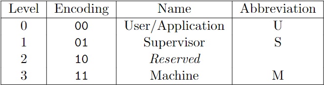
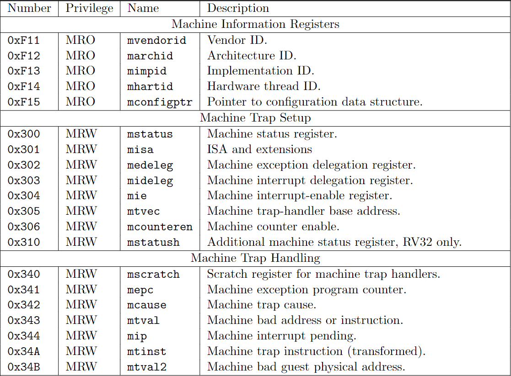
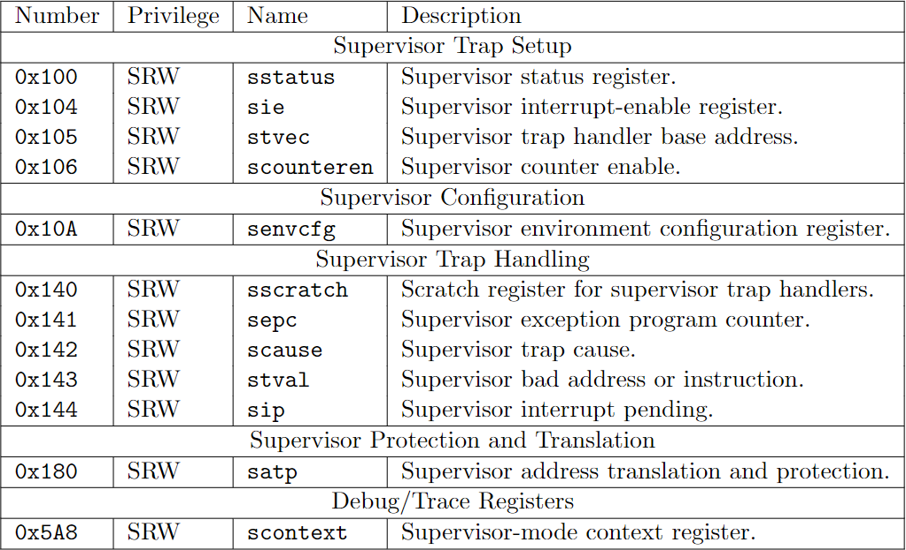
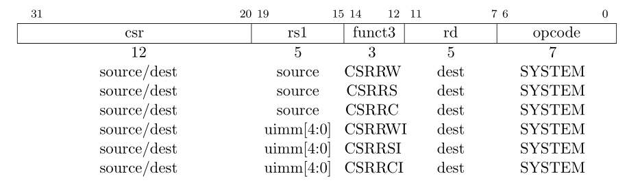
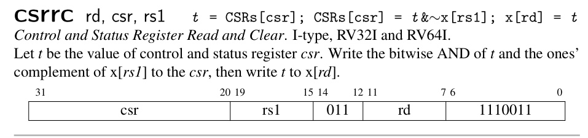
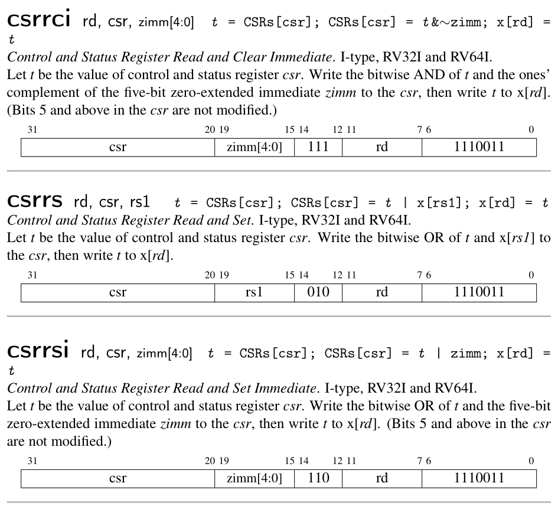
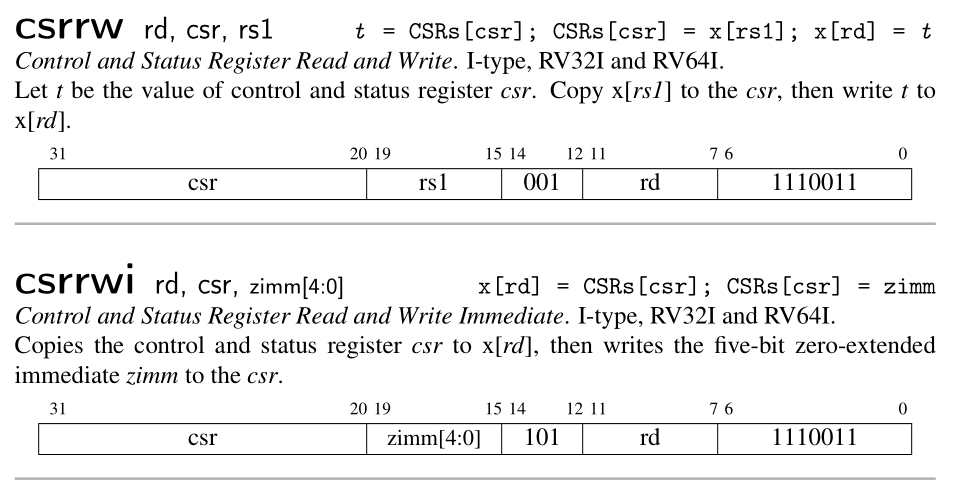

控制状态寄存器
In Refactor State
RISC-V 特权等级
本来特权架构与特权等级是下一节的内容，但这一节稍有涉及，略加说明。
在任意时刻，一个 hart 总是跑在某种特权等级上。这个特权等级编码在一个或者多个控制状态寄存器之中。当前，RISC-V 定义了三种特权等级。

图片来自 RISC-V 卷2
通常称为M-mode，S-mode和 U-mode。
控制状态寄存器
RISC-V 为每一个 hart 定义了一个独立的控制状态寄存器的地址空间，有 4096 个之多。其中已经分配的地址相对较少，具体可参见 RISC-V 标准卷二的说明。
下表基本包含了我们这个小项目需要用到的（也就是 xv6 所需要的）寄存器。

图片来自 RISC-V 卷2

图片来自 RISC-V 卷2
这些寄存器的具体意义可参考 RISC-V 标准中的说明，故不赘述。唯一值得一提的是，sie和sip是mie和mip的子集。实际上并不存在sie和sip这两个寄存器。
标准中说：通过在mideleg中设置特定的位，将一个中断从 M-mode 代理给 S-mode，则这个中断在sip中可见且可被 sie屏蔽。反之，该位在sip和sie中皆为 0。此外，读写sip和sie相当于读写mip和mie。它们的关系可表述为
sip == mip & mideleg
sie == mie & mideleg
添加 CSRs
根据上表，我们先录入所需要的寄存器地址。
cpu.rs
// Machine-level CSRs.
pub const MHARTID: usize = 0xf14;
pub const MSTATUS: usize = 0x300;
pub const MEDELEG: usize = 0x302;
pub const MIDELEG: usize = 0x303;
pub const MIE: usize = 0x304;
pub const MTVEC: usize = 0x305;
pub const MCOUNTEREN: usize = 0x306;
pub const MSCRATCH: usize = 0x340;
pub const MEPC: usize = 0x341;
pub const MCAUSE: usize = 0x342;
pub const MTVAL: usize = 0x343;
pub const MIP: usize = 0x344;
// Supervisor-level CSRs.
pub const SSTATUS: usize = 0x100;
pub const SIE: usize = 0x104;
pub const STVEC: usize = 0x105;
pub const SSCRATCH: usize = 0x140;
pub const SEPC: usize = 0x141;
pub const SCAUSE: usize = 0x142;
pub const STVAL: usize = 0x143;
pub const SIP: usize = 0x144;
pub const SATP: usize = 0x180;
CPU 需要开辟一个 4096 的地址空间，同时，为了模拟sie和sip，我们还需要定义两个辅助函数（这是原作者的设计）。
cpu.rs
pub struct Cpu {
pub regs: [u64; 32],
pub pc: u64,
pub bus: Bus,
pub csrs: [u64; 4096],
}
impl Cpu {
// new 函数也需要相应修改
// ...
pub fn load_csr(&self, addr: usize) -> u64 {
match addr {
SIE => self.csrs[MIE] & self.csrs[MIDELEG],
SIP => self.csrs[MIP] & self.csrs[MIDELEG],
_ => self.csrs[addr],
}
}
pub fn store_csr(&mut self, addr: usize, value: u64) {
match addr {
SIE => self.csrs[MIE] = (self.csrs[MIE] & !self.csrs[MIDELEG]) | (value & self.csrs[MIDELEG]),
SIP => self.csrs[MIP] = (self.csrs[MIP] & !self.csrs[MIDELEG]) | (value & self.csrs[MIDELEG]),
_ => self.csrs[addr] = value,
}
}
}
当我们读取sie时，我们读的是mie与mideleg相与的结果，当我们写sie时，我们同样只写mideleg中为1的位，其他的位保持不变。读写sip与此类似。
实际上，sstatus也是mstatus的一个子集，见 RISC-V 标准卷2 4.1.1 节，但在这本实现中是分开的。
CSR 指令
我们已经为 CPU 添加了 CSR 地址空间，现在需要支持执行 CSR 指令。CSR 的指令共有 6 个。

图片来自 RISC-V Volumn 1: Zicsr
指令的csr字段有 12 位，编码的是寄存器的地址。(2^12 = 4096)。指令的含义如下：
  
图片来自 RISC-V Reader
可以自行实现，也可以复制项目中的源码。实现以上六个指令之后，可以进行下面的测试。
cpu.rs
mod test {
// ...
#[test]
fn test_csrs1() {
let code = "
addi t0, zero, 1
addi t1, zero, 2
addi t2, zero, 3
csrrw zero, mstatus, t0
csrrs zero, mtvec, t1
csrrw zero, mepc, t2
csrrc t2, mepc, zero
csrrwi zero, sstatus, 4
csrrsi zero, stvec, 5
csrrwi zero, sepc, 6
csrrci zero, sepc, 0
";
riscv_test!(code, "test_csrs1", 20, "mstatus" => 1, "mtvec" => 2, "mepc" => 3,
"sstatus" => 4, "stvec" => 5, "sepc" => 6);
}
}
总结
我们添加了对部分控制状态寄存器的读写支持，通过辅助函数模拟了sip、sie两个寄存器。下一节，我们将添加 RISC-V 的特权等级，并支持相应的指令。